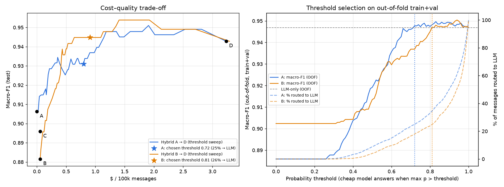
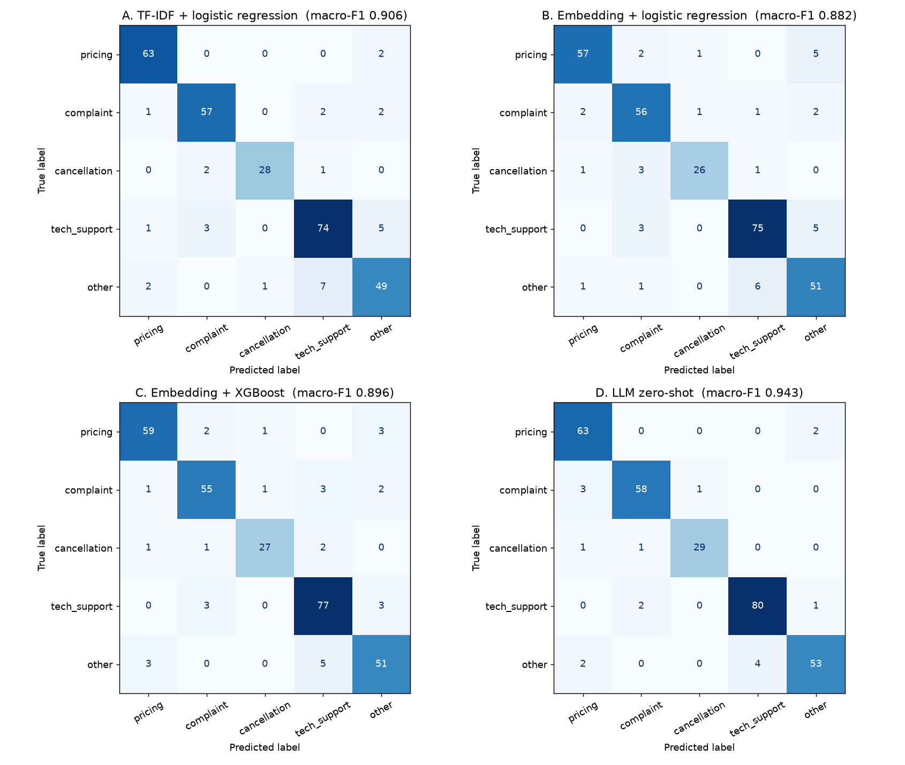

Bài toán: đọc tin nhắn của khách hàng và đoán họ muốn gì — hỏi giá, khiếu nại, hủy gói, hỗ trợ kỹ thuật hay khác — để chuyển đúng bộ phận. Chúng tôi thử 4 cách trên 2.000 tin nhắn tiếng Việt.
Điểm chính xác tính trên thang 100, đo trên 300 tin nhắn mà model chưa từng thấy.
| Cách | Điểm chính xác | Tốc độ trả lời | Chi phí / 1 triệu tin |
|---|---|---|---|
| A. Đếm từ khóa (TF-IDF) + hồi quy logistic | 90,6 | Tức thì (< 1 ms) | ~$0 |
| B. Embedding + hồi quy logistic | 88,2 | ~0,3 giây | $0,6 |
| C. Embedding + XGBoost | 89,6 | ~0,3 giây | $0,6 |
D. Hỏi thẳng LLM (gpt-4o-mini) | 94,3 | ~0,9 giây | $32 |
| 🏆 Kết hợp A + D | 93,1 | 75% tin: tức thì 25% tin: ~0,8 giây | $8 |
Toàn bộ dự án đi qua 4 chặng: tạo dữ liệu → chia dữ liệu → thi đấu 4 cách → ghép thành router.
gpt-4o gán nhãnbuild_dataset.py · ③ ④ run_experiments.py · thử router: route.py.A, B, C đều làm 2 bước: (1) biến câu thành dãy số (gọi là đặc trưng) → (2) model phân loại học từ 1.400 tin có nhãn để đoán nhãn. D bỏ qua cả hai bước, hỏi thẳng LLM.
| Cách | Bước 1: câu → số | Bước 2: đoán nhãn | Có phải classical ML? |
|---|---|---|---|
| A | TF-IDF — đếm từ và cụm chữ cái (classical) | Logistic regression (classical) | Hoàn toàn classical — không có mạng neural nào |
| B | Embedding — mạng neural có sẵn qua API | Logistic regression (classical) | Classical trên embedding |
| C | Embedding — giống B | XGBoost (classical) | Classical trên embedding |
| D | — | LLM đọc câu và trả lời | Không — đây là LLM |
gpt-4o-miniđọc câu + mô tả 5 nhãn, trả lời thẳngĐề bài cũng xếp B, C vào nhóm "model cổ điển trên embedding". Điểm chung của A, B, C: phải học từ dữ liệu có nhãn, chạy nhanh, rẻ, và trả về xác suất cho từng nhãn — nhờ có xác suất mới làm được chiến lược "tự tin thì tự trả lời".
Bước 1 — TF-IDF. Tách câu thành các mảnh rồi đếm:
huy, goi, huy goi…hu, huy, uy g… → nhờ vậy "huy goi" (không dấu), "hủy gói" và "huỷ gói" vẫn có nhiều mảnh chung.Kết quả: mỗi tin thành một dãy hàng chục nghìn con số, hầu hết bằng 0.
Bước 2 — Logistic regression. Học một trọng số cho mỗi mảnh với mỗi nhãn. Ví dụ "hủy" có trọng số cao cho cancellation, "lỗi" cao cho tech_support. Cộng trọng số của các mảnh trong câu → ra xác suất cho 5 nhãn.
Thông số: từ 1–2 chữ + cụm 2–5 ký tự (char_wb), C=10 (mức độ cho phép model khớp sát dữ liệu), class_weight="balanced" (tăng trọng số cho lớp hiếm).
Mạnh: tức thì, miễn phí, chạy offline, xử lý tốt tin không dấu. Yếu: chỉ thấy chữ, không hiểu nghĩa — "ngưng dịch vụ" và "hủy gói" khác chữ nên phải có cả hai trong dữ liệu học.
Bước 1 — Embedding. Gửi câu tới API text-embedding-3-small của OpenAI (một mạng neural đã được train sẵn trên lượng văn bản rất lớn). API trả về 1.536 con số thể hiện ý nghĩa của câu. Hai câu cùng nghĩa cho ra hai dãy số gần nhau, kể cả khi không chung chữ nào: "hủy gói" ≈ "không dùng nữa, ngưng giúp mình".
Bước 2 — Logistic regression, giống A, nhưng học trên 1.536 con số này thay vì đếm chữ.
Mạnh: hiểu từ đồng nghĩa, cách diễn đạt mới. Yếu: mỗi tin tốn 1 lần gọi mạng (~0,2–0,3 giây) và một ít tiền; cảm xúc mạnh trong câu dễ "kéo" ý nghĩa về complaint.
Bước 1: dùng lại đúng embedding của B.
Bước 2 — XGBoost: xây 400 cây quyết định nối tiếp nhau; mỗi cây là chuỗi câu hỏi "số thứ 37 có lớn hơn 0,02 không?…", và cây sau tập trung sửa lỗi của các cây trước. Kết quả cuối là tổng phiếu của cả 400 cây.
Thông số: 400 cây, độ sâu tối đa 4, learning_rate=0.08, mỗi cây chỉ xem 80% số tin và 40% số cột.
Kết quả: không tốt hơn B. XGBoost mạnh với dữ liệu dạng bảng (tuổi, thu nhập…), còn với 1.536 con số dày đặc và chỉ 1.400 mẫu học, một model tuyến tính như logistic regression là đủ — và XGBoost xử lý lớp hiếm kém nhất.
Gửi tin nhắn cho gpt-4o-mini kèm mô tả ngắn 5 nhãn, yêu cầu trả về đúng một nhãn. "Zero-shot" nghĩa là không đưa ví dụ và không train. temperature=0 để mỗi lần hỏi cho cùng câu trả lời.
Mạnh: hiểu ngữ cảnh, giọng điệu, câu nhiều ý. Yếu: chậm (~0,7–0,9 giây/tin), tốn tiền mỗi tin, và không biết các quy tắc riêng của mình (ví dụ "bị tính tiền sai → khiếu nại, không phải hỏi giá") trừ khi viết vào prompt.
gpt-4o-miniHãy hình dung một quầy lễ tân và một chuyên gia:
Cách này hiệu quả vì hai bên sai ở những chỗ khác nhau: trong 29 tin A đoán sai, LLM đúng 24 tin.


other cột tech_support là 7: có 7 tin "khác" bị đoán thành "hỗ trợ kỹ thuật".| Cặp nhầm nhiều nhất (thật → đoán) | A | B | C | D |
|---|---|---|---|---|
| khác → hỗ trợ kỹ thuật | 7 | 6 | 5 | 4 |
| hỗ trợ kỹ thuật → khác | 5 | 5 | 3 | 1 |
| hỗ trợ kỹ thuật → khiếu nại | 3 | 3 | 3 | 2 |
| hủy gói → khiếu nại | 2 | 3 | 0 | 1 |
| khiếu nại → hỏi giá | 1 | 2 | 0 | 3 |
Những câu hỏi thường gặp khi mới học dự án này, trả lời ngắn và có số liệu thật. Bấm vào từng câu để xem.
Nhãn là đáp án đúng của mỗi tin (tin này thuộc loại nào). Gán tay cả 2.000 tin thì quá lâu, nên: người gán kỹ 300 tin làm "đáp án chuẩn" → LLM gán 1.700 tin còn lại → rút ngẫu nhiên 100 tin LLM đã gán cho người xem lại. Đúng ≥ 90% thì tin được phần còn lại. Giống giáo viên chấm vài bài mẫu, giao phần còn lại cho trợ giảng rồi kiểm tra ngẫu nhiên. Xem Input.
Đủ. LLM viết 2.135 tin, lọc trùng còn đúng 1.700; gpt-4o gán nhãn cả 1.700. Trong đó 100 tin được người kiểm tra, 5 tin bị sửa nhãn. Tổng dataset: 300 gán tay + 1.700 LLM = 2.000 tin.
audit_sample.csv là gì?"Audit" = kiểm tra. Đây là 100 tin chọn ngẫu nhiên trong 1.700 tin LLM gán, có 3 cột: text (tin nhắn), llm_label (LLM gán), human_label (người gán lại). Script so hai cột: khớp 95/100 = 95%, và sửa nhãn trong dataset cho những tin người không đồng ý. Ví dụ LLM thấy chữ "cắt dịch vụ" nên gán cancellation, nhưng khách đang phàn nàn bị cắt không báo trước → người sửa thành complaint.
Cả 3 tập đều có nhãn, chất lượng như nhau — chỉ khác mục đích. Ví như ôn thi: train (1.400) = sách bài tập có lời giải, model học từ đây; val (300) = đề thi thử, dùng để chọn cách làm (ví dụ chọn ngưỡng); test (300) = đề thi thật, chỉ dùng một lần để chấm điểm cuối. Nếu dùng test để chọn cách làm thì điểm sẽ "đẹp giả" (xem data leakage).
Trong dự án, val 300 tin quá ít nên ngưỡng được chọn bằng cross-validation trên train + val (1.700 tin) — giống làm 5 đề thi thử thay vì 1.
Không sửa dữ liệu train. Thi thử không sửa sách bài tập — nó giúp chọn cách học (gọi là thiết lập: ngưỡng, thông số model…). Dữ liệu trong data/intents.jsonl giữ nguyên.
Trong dự án này:
| Thứ được chọn | Chọn bằng gì | Lưu ở đâu |
|---|---|---|
| Ngưỡng chuyển LLM (0,72) | Cross-validation trên train + val (5 lần thi thử thay vì 1 — val 300 tin quá ít, kết quả nhiễu) | models/tfidf_lr.joblib (trường threshold), results/metrics.json; điểm của mọi ngưỡng ở results/hybrid_A_cv.csv |
| Model A cho router | Học lại trên train + val (1.700 tin) với thiết lập đã chọn | models/tfidf_lr.joblib |
Thông số model (C=10, 400 cây…) | Chưa chọn bằng val — đặt cố định theo giá trị thường dùng | Ghi thẳng trong code: src/intent_router/experiments.py |
Chỉ có 2 thứ từng làm thay đổi dữ liệu: bước kiểm tra mẫu (sửa 5 nhãn sai) và lọc trùng — cả hai đều xảy ra trước khi chia train/val/test, trong build_dataset.py.
Không. Cả 2.000 tin được trộn rồi chia ngẫu nhiên 70/15/15, nên test có 263 tin LLM + 37 tin gán tay. Xem thanh chia dữ liệu ở Sơ đồ dự án.
Có, nhưng khác mức độ. Phần đoán nhãn của cả ba là classical (logistic regression, XGBoost). Riêng phần biến câu thành số: A dùng TF-IDF (classical), còn B, C dùng embedding từ mạng neural. Nên A là classical hoàn toàn; B, C là "model cổ điển trên embedding" — đúng như đề bài gọi. Chỉ D là LLM. Xem 4 cách hoạt động.
Chỉ model A được lưu: models/tfidf_lr.joblib (1,25 MB), gồm model (TF-IDF + logistic regression, đã train lại trên train + val), ngưỡng 0.72 và danh sách nhãn. Router đọc file này. B, C không lưu — mỗi lần chạy script/notebook train lại trong vài giây từ embedding đã cache.
import joblib
b = joblib.load("models/tfidf_lr.joblib")
p = b["model"].predict_proba(["Hủy gói giúp mình"])[0]
print(b["model"].classes_[p.argmax()], p.max())text-embedding-3-small được gọi ở đâu?Model chạy trên server OpenAI, dự án gọi qua API — không tải về máy.
src/intent_router/config.py (EMBED_MODEL, đổi được trong .env).src/intent_router/embed.py: embed_texts() embed 2.000 tin theo lô 256 và lưu cache; measure_latency() gửi từng tin một để đo tốc độ.scripts/run_experiments.py, scripts/rare_class_ablation.py và notebook — tin nào đã có trong data/cache/embeddings_*.npz thì không gọi lại.Trong một file trên ổ đĩa: data/cache/embeddings_text-embedding-3-small.npz (5,8 MB). Không dùng database hay vector database.
.npz là định dạng nén của thư viện numpy, giống một file zip chứa 2 mảng xếp song song:
| Mảng | Kích thước | Nội dung |
|---|---|---|
texts | 2.000 | câu gốc, vd. "Gói Pro có bao nhiêu seat?" |
vectors | 2.000 × 1.536 | vector của từng câu, vd. [-0.024, -0.023, 0.037, …] (1.536 số) |
Dòng thứ i của texts ứng với dòng thứ i của vectors. Số được lưu dạng float16 (độ chính xác vừa đủ) để file nhẹ bằng một nửa.
Khi chạy: embed_texts() đọc file → tin nào đã có thì lấy luôn, chưa có thì gọi API rồi ghi thêm vào file → trả về bảng số cho logistic regression / XGBoost dùng trong bộ nhớ.
import numpy as np
z = np.load("data/cache/embeddings_text-embedding-3-small.npz")
print(z["texts"][0], z["vectors"][0][:6])Các file khác trong data/cache/: embed_latency_*.jsonl (thời gian + số token của từng lần gọi embedding), zeroshot_gpt-4o-mini.jsonl (câu trả lời của D), annotator_gpt-4o.jsonl (nhãn LLM gán), generated_raw.jsonl (2.135 tin LLM viết).
Bước tạo embedding giống hệt (cùng model, cùng API: câu → 1.536 số). Cách dùng thì khác:
Bước kiểm tra rò rỉ (tìm tin train giống tin test nhất) chính là thao tác "retrieval" của RAG. Phần ingest đầy đủ sẽ gặp ở dự án #2.
Đúng về ý, chỉ khác 2 chi tiết:
gpt-4o-mini, gọi bằng code (classify() trong src/intent_router/llm.py). Mỗi tin là một lần gọi riêng, temperature=0, LLM bắt buộc trả về 1 trong 5 nhãn.Classify the customer message sent to a SaaS project-management product's support channel.
Return exactly one label: pricing, complaint, cancellation, tech_support, other.
- pricing: questions about prices, plans, quotas, discounts, payment methods
- complaint: dissatisfaction, billing errors, slow support, demands for refunds
- cancellation: cancel, downgrade, pause, stop renewal, delete/close account
- tech_support: how-to questions, bugs, login, integrations, API
- other: greetings, thanks, feature ideas, jobs, partnerships, off-topicĐiểm 94,3 của D tính từ 300 tin test. Nhưng thực tế D cũng được chạy trên 1.700 tin train + val — không phải để học, mà để mô phỏng chiến lược kết hợp khi chọn ngưỡng (cần biết "nếu chuyển tin này cho LLM thì LLM trả lời gì"). Tổng cộng 2.000 lần gọi, kết quả lưu ở data/cache/zeroshot_gpt-4o-mini.jsonl.
So với A, B, C: ba cách đó phải học từ 1.400 tin train có nhãn; D thì không học, chỉ "đọc đề và trả lời".
Từ 300 tin test — model chưa từng học từ các tin này. Mỗi cách đoán nhãn 300 tin, so với nhãn đúng, rồi tính macro-F1 (tính F1 cho từng nhãn rồi lấy trung bình 5 nhãn) × 100. Đếm đơn giản: A đúng 271/300, B 265, C 269, D 283. Dự đoán từng tin lưu ở results/test_predictions.csv, tự tính lại được:
uv run python -c "
import pandas as pd; from sklearn.metrics import f1_score
t = pd.read_csv('results/test_predictions.csv')
for k in 'ABCD': print(k, round(f1_score(t.label, t['pred_'+k], average='macro')*100, 1))"Có nhưng rất ít: $0,02 / 1 triệu token, mỗi tin ~29 token. Cả dự án embed ~71.000 token ≈ $0,0014 (khoảng 35 đồng). Dùng thật ~$0,58 / 1 triệu tin — rẻ hơn LLM (~$32) khoảng 55 lần. Cái giá thật của B, C là thời gian chờ (+0,2–0,3 giây/tin) và cần mạng + API key. Chạy lại notebook không tốn thêm vì đã có cache.
Kết hợp A + D: model A trả lời khi tự tin > 72% (75% số tin), còn lại hỏi LLM. Đạt 93,1 điểm (LLM-only 94,3) với chi phí $8 thay vì $32 / 1 triệu tin. Nếu chỉ cần chính xác nhất thì là D; rẻ và nhanh nhất là A. Xem Bảng xếp hạng.
Khai báo trong pyproject.toml, cài bằng uv sync.
| Thư viện | Là gì | Dùng để làm gì trong dự án | Ở file nào |
|---|---|---|---|
scikit-learn | Thư viện ML cổ điển phổ biến nhất của Python |
TfidfVectorizer, FeatureUnion, make_pipeline: bước đếm chữ của A ·
LogisticRegression: model của A, B ·
train_test_split: chia 70/15/15 · StratifiedKFold: cross-validation 5-fold ·
f1_score, confusion_matrix, classification_report: chấm điểm ·
accuracy_score, cohen_kappa_score: đo độ khớp giữa nhãn LLM và nhãn người ·
compute_sample_weight: cân bằng lớp hiếm cho XGBoost |
experiments.py, build_dataset.py, run_experiments.py |
xgboost | Thư viện gradient boosting (nhiều cây quyết định) | XGBClassifier: model của C. Trên macOS cần brew install libomp | experiments.py |
| Thư viện | Là gì | Dùng để làm gì trong dự án | Ở file nào |
|---|---|---|---|
openai | SDK chính thức để gọi API OpenAI |
chat.completions.parse: sinh 1.700 tin, gán nhãn bằng gpt-4o, chạy D bằng gpt-4o-mini ·
embeddings.create: lấy embedding cho B, C · AsyncOpenAI: gọi nhiều request song song |
llm.py, embed.py, build_dataset.py, router.py |
pydantic | Khai báo kiểu dữ liệu và kiểm tra dữ liệu | Định nghĩa khuôn câu trả lời của LLM, ví dụ label: Literal["pricing", "complaint", …] → LLM bắt buộc trả về 1 trong 5 nhãn hợp lệ (structured output), không cần tự cắt chuỗi | llm.py, build_dataset.py |
python-dotenv | Đọc file .env | Nạp OPENAI_API_KEY và tên model từ .env mà không phải ghi key vào code | config.py |
| Thư viện | Là gì | Dùng để làm gì trong dự án |
|---|---|---|
pandas | Bảng dữ liệu | Đọc intents.jsonl, lọc theo train/val/test, đếm nhãn (crosstab), ghi các file .csv kết quả |
numpy | Tính toán trên mảng số | Lưu embedding (mảng 2.000 × 1.536), tính p50/p95 latency, lấy mẫu ngẫu nhiên cho bootstrap |
matplotlib | Vẽ biểu đồ | Vẽ confusion_matrices.png và tradeoff.png |
joblib | Lưu / nạp object Python | Lưu model A + ngưỡng vào models/tfidf_lr.joblib để router nạp lại |
tqdm | Thanh tiến trình | Hiện % hoàn thành khi gọi hàng nghìn request API |
| Thư viện | Dùng để làm gì |
|---|---|
jupyter | Mở và chạy notebooks/intent_router.ipynb (uv run jupyter lab) |
ipykernel | "Bộ máy" chạy code Python bên trong notebook, dùng đúng môi trường .venv của dự án |
nbconvert | Chạy toàn bộ notebook từ dòng lệnh để kiểm tra không có ô nào lỗi |
| Tên | Dùng để làm gì |
|---|---|
asyncio | Gửi nhiều request API cùng lúc, giới hạn số request song song (Semaphore) |
unicodedata, re | Bỏ dấu tiếng Việt và ký tự đặc biệt để phát hiện tin trùng |
time | Đo thời gian trả lời của từng tin (latency) |
json, csv, pathlib | Đọc / ghi file dữ liệu và cache |
random | Chọn ngẫu nhiên văn phong, persona, 100 tin kiểm tra mẫu (cố định seed 42) |
uv | Công cụ quản lý Python và thư viện: tạo .venv, cài đúng phiên bản theo uv.lock, chạy script (uv run) |
libomp | Thư viện hệ thống (cài bằng Homebrew) để XGBoost chạy đa luồng trên macOS |
git clone https://github.com/dangphamv/intent-router-ml-vs-llm
cd intent-router-ml-vs-llm
brew install libomp && uv sync # cài đặt (macOS)
uv run jupyter lab notebooks/intent_router.ipynb # xem toàn bộ kết quả — không cần API key
uv run scripts/route.py "Hủy gói giúp mình" # thử router (cần OPENAI_API_KEY trong .env)Chạy lại từ đầu (cần key): scripts/build_dataset.py → scripts/run_experiments.py → scripts/rare_class_ablation.py. Kết quả ghi vào data/, results/, models/.
Đề bài yêu cầu: "Khoảng 2.000 tin nhắn có nhãn ý định: tự gán khoảng 300, phần còn lại dùng LLM gán nhãn rồi kiểm tra mẫu." Nhãn là đáp án đúng của mỗi tin — tin đó thuộc loại nào. Model cần đáp án để học và để được chấm điểm.
Giống giáo viên chấm bài: tự chấm kỹ vài bài mẫu, giao phần còn lại cho trợ giảng, rồi rút ngẫu nhiên vài bài để xem trợ giảng chấm có đúng không.
data/seed_raw.tsv.gpt-4o-mini viết 2.135 tin, lọc trùng còn 1.700; gpt-4o gán nhãn theo hướng dẫn gán nhãn.data/audit_sample.csv.Kiểm tra thêm: cho LLM gán lại cả 300 tin chuẩn rồi so với nhãn người — khớp 99%.
| File | Nội dung | Ví dụ một dòng |
|---|---|---|
data/seed_raw.tsv | 300 tin gán tay. Mỗi dòng: nhãn ⇥ tin nhắn | pricing Gói Pro có bao nhiêu seat? |
data/LABELING_GUIDE.md | Định nghĩa 5 nhãn + quy tắc cho ca khó | "Có ý định hủy → luôn là cancellation" |
data/audit_sample.csv | 100 tin kiểm tra mẫu. Cột text, llm_label (LLM gán), human_label (người gán) | "...cắt dịch vụ mà không thấy thông báo gì, rất khó chịu.", cancellation, complaint |
data/intents.jsonl | Dataset cuối: 2.000 tin, dùng cho mọi thực nghiệm | {"text": "Gói Pro có bao nhiêu seat?", "label": "pricing", "split": "val", "source": "human"} |
.env | API key (chỉ cần khi chạy lại từ đầu) | OPENAI_API_KEY=sk-... |
Trong intents.jsonl: split cho biết tin thuộc tập train (học), val (tinh chỉnh) hay test (chấm điểm cuối); source là human (300 tin gán tay) hoặc llm (1.700 tin LLM gán).
data/seed_raw.tsv, sửa nhãn ở đầu dòng nếu không đồng ý.data/audit_sample.csv, sửa cột human_label theo ý mình.uv run scripts/build_dataset.py rồi uv run scripts/run_experiments.py (cần API key).Chạy từng lệnh trong thư mục repo và so với cột "Kết quả đúng". Các lệnh này không cần API key.
uv run python -c "
import pandas as pd; df = pd.read_json('data/intents.jsonl', lines=True)
print(df.source.value_counts().to_dict()); print(pd.crosstab(df.label, df.split, margins=True))"Kết quả đúng:
{'llm': 1700, 'human': 300}
split test train val All
cancellation 31 146 32 209
complaint 62 288 61 411
other 59 277 60 396
pricing 65 303 65 433
tech_support 83 386 82 551
All 300 1400 300 2000Cần thấy: tổng 2.000; train/val/test = 1.400 / 300 / 300 (70/15/15); mỗi nhãn chiếm tỷ lệ giống nhau ở cả 3 tập.
uv run python -c "
import json; r = json.load(open('data/dataset_report.json'))
print('seed:', round(r['seed_agreement']['accuracy'], 3), 'audit:', r['audit']['agreement'])"Kết quả đúng: seed: 0.99 audit: 0.95 — cả hai phải ≥ 0.90. Nếu audit: None nghĩa là cột human_label trong audit_sample.csv còn ô trống.
cat results/comparison.mdKết quả đúng (macro-F1 = điểm chính xác / 100):
| Cần thấy | Giá trị |
|---|---|
| A. TF-IDF + LR | 0.906 |
| B. Embedding + LR | 0.882 |
| C. Embedding + XGBoost | 0.896 |
| D. LLM zero-shot | 0.943 |
| A → D, ngưỡng 0.72: % chuyển LLM / macro-F1 / $ per 100k | 24.7% / 0.931 / 0.80 |
Cột latency (ms) dao động nhẹ mỗi lần đo; các cột còn lại phải giống hệt.
open results/confusion_matrices.png results/tradeoff.pngCần thấy: 4 ma trận (A, B, C, D) với số lớn nằm trên đường chéo; biểu đồ có ngôi sao đánh dấu ngưỡng 0,72 (A) và 0,81 (B).
uv run jupyter nbconvert --to notebook --execute --output /tmp/check.ipynb notebooks/intent_router.ipynb
grep -c '"output_type": "error"' /tmp/check.ipynbKết quả đúng: dòng cuối in ra 0 (không có ô nào lỗi).
uv run scripts/route.py "Gói Pro có bao nhiêu seat?" "ko muốn xài nữa, ngưng giúp mình" "Mỗi lần dùng là có lỗi, không thể yên tâm làm việc!"Kết quả đúng (độ tự tin có thể lệch chút):
pricing conf=1.00 via=local Gói Pro có bao nhiêu seat?
cancellation conf=0.98 via=local ko muốn xài nữa, ngưng giúp mình
tech_support conf=0.62 via=gpt-4o-mini Mỗi lần dùng là có lỗi, không thể yên tâm làm việc!via=local = model rẻ tự trả lời; via=gpt-4o-mini = không chắc nên chuyển LLM.
Bấm vào từng mục để xem cách làm, công cụ và thông số.
gpt-4o-mini viết (10 văn phong, 11 kiểu người gửi, có tin không dấu, teencode), rồi gpt-4o gán nhãn.train_test_split(stratify=...)). Không có tin test nào trùng gần với tin train.class_weight="balanced"). Thí nghiệm: khi ép lớp này còn 3%, không cân bằng thì model chỉ bắt được 57% (A) và 64% (B) số tin hủy; có cân bằng tăng lên 72% và 84%.LogisticRegression(C=10). B — text-embedding-3-small + LogisticRegression(C=10). C — XGBClassifier(400 cây, độ sâu 4, learning_rate 0.08). D — gpt-4o-mini, temperature 0.notebooks/intent_router.ipynb.docs/blog-khi-nao-khong-can-llm.md.IntentRouter trong src/intent_router/router.py.Ví dụ đời thường: thả lưới bắt cá trong hồ. Hồ có 100 con cá, lẫn với rác. Kéo lưới lên được 50 thứ: 45 con cá và 5 cái rác.
Hai cách ăn gian: lưới siêu nhỏ chỉ bắt 1 con chắc chắn là cá → precision 100% nhưng recall 1%. Vét cả hồ → recall 100% nhưng toàn rác. F1 phạt cả hai.
| Số tin | Ý nghĩa | |
|---|---|---|
| Tin muốn hủy thật | 31 | "cá trong hồ" |
| A gắn nhãn "hủy gói" | 29 | "thứ kéo lên" |
| — trong đó đúng | 28 | cá thật |
| — báo nhầm | 1 | "Đợi chút nhé, để mình hỏi sếp đã" (thật ra là other) |
| Bỏ sót | 3 | vd. "Tôi đã liên hệ để hủy gói nhưng giờ vẫn thấy bị trừ tiền…" → A đoán complaint |
Precision = 28 / 29 = 96,6% · Recall = 28 / 31 = 90,3% · F1 = 93,3.
| Bài toán | Sai kiểu nào đắt hơn | Ưu tiên |
|---|---|---|
| Lọc thư rác | Chặn nhầm thư thật của sếp (báo nhầm) | Precision |
| Sàng lọc ung thư | Bỏ sót người bệnh | Recall |
| Hàng đợi "hủy gói" (dự án này) | Bỏ sót khách muốn hủy → khách bực, có thể bị khiếu nại vì không cho hủy | Recall của cancellation |
| Router 5 nhãn (dự án này) | Nhãn nào cũng cần đúng; số tin mỗi nhãn không đều (10%–28%) | Macro-F1 |
Vì sao không dùng accuracy (tỷ lệ đoán đúng)? Vì lớp hiếm bị "chìm". Giả sử một model đoán đúng hoàn hảo 4 nhãn kia nhưng không bao giờ đoán "hủy gói" (31 tin đều bị đoán thành khiếu nại): accuracy vẫn là 269 / 300 = 89,7% — trông ổn — nhưng macro-F1 chỉ 76, vì F1 của "hủy gói" bằng 0 và kéo trung bình xuống.
Quyết định của dự án: dùng macro-F1 làm thước đo chính, và theo dõi riêng recall của cancellation — đó là lý do bật cân bằng trọng số lớp và chạy thí nghiệm lớp hiếm.
Data leakage là khi thông tin của tập test "lọt" vào quá trình huấn luyện hoặc lựa chọn model. Hậu quả: điểm báo cáo đẹp giả, mang ra dùng thật thì tụt. Giống học sinh được xem trước đề thi: điểm cao nhưng không phản ánh năng lực thật.
Pipeline dưới đây chạy được và cho điểm cao. Nó có 4 chỗ rò rỉ — thử tìm trước khi mở đáp án.
df = pd.read_json("intents.jsonl", lines=True)
df = pd.concat([df, df[df.label == "cancellation"]]) # tăng lớp hiếm
vec = TfidfVectorizer().fit(df.text)
X = vec.transform(df.text)
X_train, X_test, y_train, y_test = train_test_split(X, df.label)
model = LogisticRegression().fit(X_train, y_train)
best_t = max(thresholds, key=lambda t: hybrid_f1(model, X_test, y_test, t))
print("Macro-F1:", hybrid_f1(model, X_test, y_test, best_t))| # | Dòng lỗi | Vì sao rò rỉ | Cách sửa |
|---|---|---|---|
| 1 | pd.concat([df, df[...cancellation]]) | Nhân bản tin trước khi chia → cùng một tin nằm ở cả train và test. Model "nhớ" đáp án. | Chia trước, chỉ cân bằng trên train; hoặc dùng class_weight="balanced" thay vì nhân bản. |
| 2 | TfidfVectorizer().fit(df.text) | Học từ vựng và trọng số IDF từ cả tin test → model biết trước những từ sẽ xuất hiện trong đề thi. | Đặt vectorizer trong Pipeline, chỉ fit trên train (và trên từng fold khi cross-validation). |
| 3 | train_test_split(X, df.label) | Không lọc tin trùng / gần trùng (tin sinh bằng LLM hay lặp ý) → test có "bản sao" trong train. Cũng không stratify. | Lọc trùng trước khi chia; stratify=df.label; kiểm tra độ giống train–test. |
| 4 | best_t = max(..., X_test, y_test ...) | Chọn ngưỡng trên chính tập test rồi báo cáo điểm trên tập test đó. | Chọn ngưỡng trên val hoặc out-of-fold của train; test chỉ dùng một lần ở cuối. |
| Nguy cơ | Cách chặn | Kiểm tra |
|---|---|---|
| Tin trùng giữa các tập | Bỏ dấu, chữ thường, bỏ ký tự đặc biệt rồi loại trùng (normalize()) trước khi chia | 2.135 tin sinh → loại 2 tin trùng nhau + 1 tin chép y nguyên tin seed. 0 cặp test–train giống nhau quá 0,9 (cosine) |
| Tin sinh "bắt chước" tin seed | Khi sinh, LLM được xem 6 tin seed làm mẫu nhưng được yêu cầu không lặp ý | Cặp test–train giống nhất chỉ 0,899 — hai câu khác chữ, cùng ý ("thất vọng về dịch vụ") |
| Fit TF-IDF trên cả test | make_pipeline(TfidfVectorizer, LogisticRegression) — mọi bước fit lại trong từng fold / chỉ trên train | Xem experiments.tfidf_lr() |
| Cân bằng lớp bằng nhân bản | Dùng class_weight, không nhân bản tin; thí nghiệm lớp hiếm chỉ bớt tin ở train fold | Xem experiments.rare_class_ablation() |
| Chọn ngưỡng trên test | Chọn trên out-of-fold của train+val, test chỉ dùng để báo cáo | Nếu chọn trên test, A + D sẽ báo cáo 95,1 (ngưỡng 0,93) thay vì 93,1 — đẹp giả 2 điểm |
| Nhãn test do cùng họ model với D gán | Không hẳn là rò rỉ nhưng gây thiên vị → so thêm trên tin có nhãn người | Trên 37 tin test nhãn người: D 97,3, A 90,5 — thứ hạng không đổi |
results/comparison.md.notebooks/intent_router.ipynb · Blog: Khi nào không cần LLM? · Code: GitHub.data/seed_raw.tsv và data/audit_sample.csv rồi chạy lại.gpt-4o gán — cùng họ với LLM đang thi — nên kết quả có thể hơi thiên vị LLM.